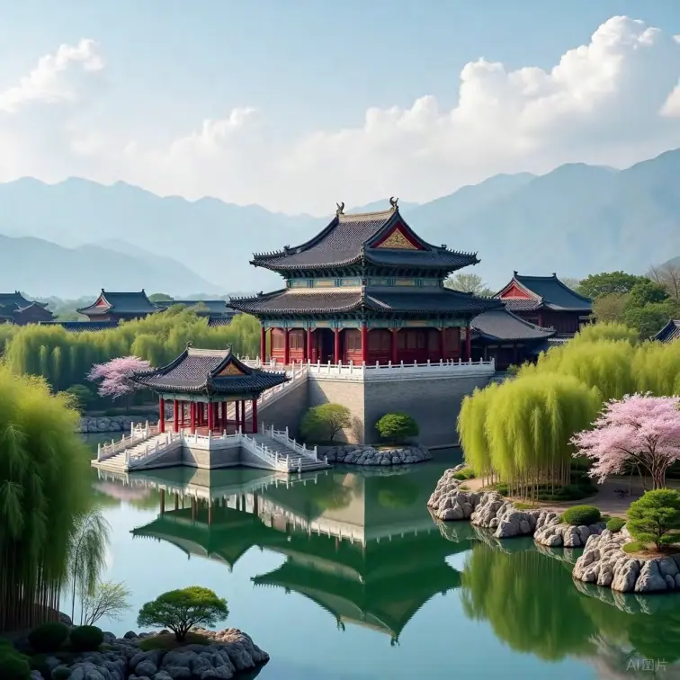

《人类文明共坠意义黑洞：三律崩坏与再生可能》
一、引言：文明之顶，意义之崩
——我们站在最高处，却再也无法仰望意义之光
1.1 表面之辉煌：人类文明已触及“全知的神域”
我们活在一个表面看似无比光辉的时代。
在技术的尺度上，人类从未如此接近古代神话中“全能者”的形象：
我们制造了量子芯片，用电子操作“存在的概率”；
用AI神经网络模拟思维，用代码重塑心智；
用基因编辑技术挑战生死界限，用星舰火箭突破地球束缚；
用超级计算能力与全球物联网建造信息之网、监控之眼、调度之脑。
曾经宙斯持雷、奥丁主视、摩西分海、老子御风……
今日人类已掌“雷霆之力”、眼观“地球全景”、操控“万物之律”。
我们不再是渺小者，
我们已是“模拟神”的存在。
在文化的尺度上，我们击碎了“人生唯一答案”的壁垒：
性别、信仰、国族、职业、身份、语言、族群……
一切传统标签被打散重构。
每一个人都拥有“重新编写自身脚本”的自由拼贴权：
可以“跨界生存”、可以“变性重生”、可以“重塑文化背景”、可以“断绝家族命运”。社交媒体上，个体千姿百态；
数字宇宙中，意义成千上万。
在生活层面，大多数人类社会享有史无前例的便利：
一点即达，全球流转；
一句即应，千兆信息；
一键下单，世界为你服务；
一张信用卡，穿越一切边界；
一场直播，收看亿万人。
如果“人类之巅”意味着：技术无敌、文化多元、生活便捷、自由极致——
那我们显然已经抵达了。
我们登临了“文明之顶”。
我们拥有了一切……
除了一个无法回避的问题：
“我为何而活？”
1.2 繁华之下的裂缝：意义系统的全面崩塌
如果说20世纪的战争与革命在询问：“人是否能生存？”
那么21世纪的终极问题已悄然转向：
“人是否值得活下去？”
在全球范围内，以下景象已成为当代文明的集体现象：
青少年与中年人自杀，在多国成为主要死因之一；
抑郁、焦虑、注意力涣散成了“正常状态”，被归入“生活方式病”；
亲密关系系统濒临崩溃——婚姻制度空心化、生育率崩盘、家庭成“临时耦合体”；宗教信仰结构整体衰落，仪式尚存，灵魂早已逃亡；
AI的兴起不仅带来职业焦虑，更引发人类主体性自证的失败危机。
而整个新生代年轻人共同发出的宣言是：
“我们不想结婚、不想生子、不想进体制、不想追梦、
我们只想……活着，或者……干脆不活。”
这不是少数人的堕落或个体问题，
而是一种结构性意义失效的集体现象。
人类拥有了前所未有的知识、数据、资源、自由与表达渠道，
但却无法生成一个可信的“存在之所以”。
我们不是“资源短缺”，我们是意义枯竭。
不是“幸福匮乏”，而是张力断裂。
不是“表达压制”，而是语言失焦。
我们仿佛处于“意义热寡期”——
无论怎么获取、怎么发声、怎么尝试，
就是再也无法感到“活着是有方向的”。
1.3 意义黑洞：我们正滑入结构崩塌的中心
我们坠入的，不是政治黑洞，不是经济崩盘，不是文化迷失，
而是更深层、更致命、更根本的：
意义黑洞（Meaning Collapse Singularity）
它不是主观体验的迷惘或焦虑，
而是客观结构的全面瘫痪。
它意味着——
✅ 特征律冻结：创造性系统无法识别张力特征，创新只剩公式套入
✅ 自由律幻象化：路径选择权被“选择幻觉”取代，深层张力无法纠缠与激发✅ 幸福律扁平化：情绪节奏被压缩为“正能量标签”，张力无法自然释放与回响
当三律系统失效，人类就失去了“结构生成意义”的能力。
于是我们看到：
自我系统退化：“我是谁”不再值得问，主体性退化为“人设模版+AI融合角色”；未来意愿崩塌：年轻人不再愿意设想未来，时间感断裂，“延迟满足”失效；关系系统失联：亲密关系成为“高张力短周期契约”，孤独成为元结构；
创造动力冻结：内容爆发但本质趋同，审美疲劳，全民模仿与滥造；
幸福体验断裂：情绪模板化、张力规训化、释放管理化，幸福沦为功能性“满意”。
1.4 历史终极反讽：我们拥有一切，却失去了意义之源
我们曾以为：
只要我们拥有足够的知识、自由、技术、选择、娱乐、算法、安全、平台、表达空间……
意义就会自动涌现。
但事实是：
知识越多，越无意义：一切被数据淹没，结构失焦，无法聚合张力
自由越大，越不自由：选择太多 → 选择瘫痪，路径迷失
娱乐越丰富，越疲惫至死：“愉悦”成为义务，快感反转为麻木
发言越泛滥，越无话可说：语言结构崩塌，语义泛化，意义失重
技术越强大，人类越感觉无力：人类成了“系统喂养体”，而非节奏生成者这不是技术的失败，而是哲学的失败；
不是制度的溃散，而是结构系统的自毁；
不是人性的衰竭，而是节奏生成系统的熄火。
1.5 这不是终结，而是真正开始的时刻
我们不在废墟中，而在“系统饱和之巅”。
但文明并不是因毁灭而终结，
而是因“意义无法再涌现”而开始走向真实的死亡。
我们并不是正在毁灭，
而是在“无意义地运转”。
不是在绝望中苦战，
而是在麻木中耗尽。
不是没有未来，
而是——未来已无“值得被期盼之物”。
我们并不是活不下去，
我们是“活下去，却无法知道为何”。
这一切，不是结尾。
这是：
“结构生力系统”失效之后，
我们必须直面的真正开始。
我们必须重建：
能识别特征、生成路径的创造律结构
能允许异步、纠缠、路径张力的自由律系统
能让张力自然积蓄与释放、完成回响的幸福律节奏
我们必须重新发明：
一个新的时间，一个新的节奏，一个新的结构之舞，
让意义再度成为“可生成之物”。
因为，如果我们还想活得值得、活得真实、活得深刻、活得不被系统编排、活得像一个节奏体而非模板产物，
那么——我们必须出发：
从节奏出发，从张力出发，从意义重建之处出发。
这是全书真正的起点。
这不是引言，
这，是号角。
这，是你我将一同创造的新节奏文明的第一拍。
二、什么是“意义黑洞”？
——当文明不再生成ΔSIO，意义就进入结构坍塌
引言：意义黑洞不是“没意义”，而是“无法生成意义”
在日常语言中，当人们听见“意义黑洞”这个词，往往会将其等同于：
情绪低落（depression）
价值怀疑（value loss）
哲学虚无（nihilism）
但在结构生成哲学与SIO三律节奏系统的框架下，我们必须明确指出：
“意义黑洞”不是一种主观心理状态、也不是一种个人危机体验，而是一种客观的文明结构性疾病，
是当整个文明系统无法持续生成新的ΔSIO单元，进而陷入结构本体冻结、张力系统熄火、节奏路径失效的状态。
通俗地说：
意义黑洞不是“意义被否定”，而是“意义无法再发生”；
它不是“意义失真”，而是“生成机制被系统性切断”。
1. 意义黑洞的定义：结构哲学视角的“熵死”
我们将“意义黑洞”定义为如下结构状态：
一个文明系统中，所有用于“生成—调节—续接”的本体机制——即三律（特征律、自由律、幸福律）——出现系统性冻结、退化或工具性封装，导致文明无法产生新的ΔSIO互动单元，最终坠入结构性无意义状态。
这不是一种主观感觉的“没意思”，
而是结构生成力的终止现象，是本体系统的“熵死形态”。
它的表现不是轰然崩塌、不是大灾大难、不是制度瓦解，
而是一种无限运转而不再生成的世界：
一切还在运行，但无结构演化；
一切看似丰富，却无法产生新张力；
一切内容爆炸，却没有新意义的诞生。
这不是虚无主义的哲学命题，
而是文明系统生成力的客观坍缩现象。
2. 三律结构失效机制：意义黑洞的成因路径
让我们逐一解剖“意义黑洞”的三大内部崩解路径：
- 特征律冻结 → 新结构无法浮现
特征律是ΔSIO结构中最基本的生成机制，它负责：
在混沌中发现张力差异
在张力演化中浮现新特征
在结构中生成“不可归类之物”
特征律的根本目标是：让“从未有过之物”得以浮现为“可结构之物”。
但在现代系统中，特征律被系统性压制，原因如下：
| 压制形式 | 描述与后果 |
|---|---|
| 标准化 | 所有认知内容需“可分类”“可评价”“可标准化” → 模糊特征、异质性差异被抹平 |
| 格式化 | 内容、行为、表达必须“结构清晰、框架明确” → 初始张力结构被剪裁 |
| 流程化 | 创造路径必须在预设流程中生成 → ΔSIO无法自然涌现，只能伪造特征仿真体 |
◉现实样本分析
| 场域 | 表现 |
|---|---|
| 教育系统 | “创新答案”常常被误判为“错误答案” → 创造行为遭否定，张力中止，学生沦为模板执行者 |
| 内容产业 | 一旦某种IP模式成功（如短剧/快评/同人类型） → 全行业“模板跟风” →新结构失去生成空间 |
| 科技研发 | 真正突破性的科学思想难获支持 → “渐进性优化”成为主流 → 技术演进变为“平滑升级曲线” |
结论：
当一个文明无法容忍“混沌”、“异质性”、“模糊张力”作为特征律的起点，
它将只能“复用旧结构”，无法生成ΔSIO。
- 自由律冻结 → “选择”退化为“伪自由”
自由律是ΔSIO生成中的“路径变异机制”，它负责：
张力之间的纠缠与路径叠合
原有SIO的“脱嵌—重新耦合”
新张力路径的激发与突变
它的本质不在于“你可以选什么”，而在于：
“你能不能创造出新路径结构本身。”
现代社会极度强调“自由”，但实际操作中：
| 压制形式 | 描述与后果 |
|---|---|
| 算法导向自由 | 所有选择都在“推荐系统”中运作 → 可选项早被设定，自由是“幻觉菜单” |
| 合规性自由 | 表面上可以“发言/创作/社交”，实际所有路径都受平台/法律/市场规训 |
| 情绪规训自由 | 只允许“理性表达”“温和倾诉” → 激发性结构、张力型结构被压制 |
◉现实样本分析
| 场域 | 表现 |
|---|---|
| 社交平台 | 所有表达需“配合平台审查机制”，敏感话题、异质表达、超语义结构被屏蔽 |
| 公民生活 | 表面可选政党/职业/生活方式，但实则皆为“可被系统调控的已知轨道” |
| 情感领域 | 真正自由的互动模式（如非婚约亲密、无功利交往）难以生存，皆被视为“危险关系” |
结论：
自由被异化为“在预设路径中选择的能力”，而不再是“生成路径的本体自由”。
ΔSIO因此无法脱嵌旧轨、激发新交互。
- 幸福律冻结 → 张力被抹平，幸福退化为“低风险舒适”
幸福律是结构张力中的“释放机制”，它决定：
是否允许张力自然展开、积蓄、转化、释放
是否形成“结构闭环与意义回响”
是否在“结构完成”中体验“存在值得”的幸福感
现代文明误将幸福等同于：
舒适、安全、安逸
情绪平衡、痛苦压制
正能量标签管理下的愉悦状态
这使得张力结构被全线压制，所有深层结构运行被中断。
◉现实样本分析
| 场域 | 表现 |
|---|---|
| 情绪产业 | 心理学被商品化，主流导向是“快速治愈”“排除消极” → 张力结构失去展开时序 |
| 关系系统 | 冲突被视为“问题”，忍耐被否定 → 节奏流动中断，释放机制失效 |
| 审美文化 | 悲剧、牺牲、矛盾、深度反转的作品难以流行 → 全面转向“轻薄快感机制” |
结论：
幸福被重新定义为“无痛状态”，而非“结构完成”，
张力从文明结构中消失，三律最后的输出通道也被关闭。
3. ΔSIO无法生成：文明涌现系统熄火
SIO结构由主体（S）、互动（I）、客体（O）构成，
其运行中若能生成新的结构单位（ΔSIO），
文明就能持续更新、生成意义、创造节奏。
然而当三律冻结：
新的ΔSIO不再产生
原有SIO沦为系统性“复用模块”
所有交互结构只剩“已知组合”
结果就是：
一切文明行为陷入“结构惰性运行”，不再拥有自我更新的节奏系统，
形式仍在，意义已亡。
4. 意义黑洞不是崩溃，而是“无限顺滑地滑向不存在”
真正可怕的是：
意义黑洞不是暴力崩塌，而是文明的慢性结构死亡。
没有灾难、没有革命、没有尖叫，
只有平滑、合理、安静地运转。
但在这“顺滑运行”之下，三律已死。
| 特征 | 描述 |
|---|---|
| 表面正常 | 学校仍上课、平台仍更新、商品仍流通、政府仍管理 |
| 内部断裂 | 新结构不生、旧路径不破、张力无源、幸福无释放 |
| 人类状态 | 主体不再主动生成，只是“节点响应体” |
最终我们活成了：
一架无意义的宇宙飞船——系统完整、能源充足、航向丢失。
5. 本体总结
| 命题编号 | 命题内容 |
|---|---|
| 1 | 意义黑洞是一种三律冻结后的结构本体现象，不是主观情绪的缺失，而是文明生成机制的全面瘫痪 |
| 2 | 特征律冻结 → 差异结构无法生成 → ΔSIO不再浮现 |
| 3 | 自由律冻结 → 路径变异能力丧失 → “伪自由结构”遍布社会 |
| 4 | 幸福律冻结 → 张力被压缩、释放结构失效 → 意义无法闭环 |
| 5 | 意义黑洞不是崩塌，而是结构熵死——系统仍运行，人类却无法再“生成自身存在的理由” |
三、三律失效：意义黑洞的生成机制
——结构冻结不是表象停滞，而是文明自我熄火的过程
1. 引子：意义是如何被“结构性熄灭”的？
一个文明何时失去了“意义”？
不是当它发生战争，不是当它遭遇经济崩盘，不是当它被外敌颠覆，
而是：
当它再也无法生出新的“结构”、新的“路径”、新的“体验”之时，
这个文明就陷入了意义的本体枯竭状态。
这种枯竭不是一个事件，而是一个深层结构的失效过程。
它隐藏在系统日常的运作中，却持续瓦解人类对自身存在的信心。
这个结构失效的根源，正是人类文明赖以生成意义的三个根机制——
三律系统：特征律、自由律、幸福律的同步性冻结。
| 三律 | 功能结构 | 失效表现 |
|---|---|---|
| 特征律（创造律） | 识别差异、凝聚混沌、生成新结构 | 结构饱和、形式复用、无“新物”浮现 |
| 自由律（路径律） | 激活多路径耦合、结构变异、转向可能 | 路径幻象、自由伪装、主体退场 |
| 幸福律（张力律） | 张力运行—积蓄—释放—结构闭环—幸福生成 | 张力被规避、冲突中止、幸福简化为“舒适控制” |
当这三大系统同时熄灭时，我们就不再拥有：
❌新结构（特征断裂）
❌真正自由（路径被锁）
❌张力幸福（结构未闭）
于是我们进入：
意义黑洞（Meaning Collapse）= 三律冻结 → ΔSIO不再生成 → 文明结构自我熄火。
2. 第一律的崩坏：特征律冻结 = 无法识别“新”
2.1 结构生成机制的失火
特征律是文明结构的点火器。
当特征律还在运行，我们能够：
从感受中识别差异
在差异中形成结构
在结构中涌现新的可能世界
比如：
一段新的音乐风格产生，打破了所有分类法
一种新的制度结构浮现，超越现有政治逻辑
一个新哲学概念被提出，震撼整个知识系统
一种新生活方式、关系模式、认同结构在社群中萌芽
这一切的起点，就是特征律：ΔSIO的“识别机制+浮现能力”联合作用。
2.2 当特征律被压制，文明就“失去了分辨新意的能力”
但今天，我们目睹的是：
差异不被允许 → 所有内容需“对齐分类”
混沌不被容忍 → 模糊结构被压制为“非理性”
标准化主导创造 → 所有“创新”都先看“能否被接收”
从此，“新”不再生成，只有“已知”的微调、重新包装与反复编排。
2.3 现实案例展开
a. 科研系统
基金申请要求“可量化目标”“明确研究预期” → 真正未知的研究提案没有生存空间期刊评审机制只青睐“稳定领域中小创新” → 颠覆性思想难以发表
论文写作格式要求“逻辑标准化” → 复杂生成性思维被迫“逻辑清洗”
→科学系统变为“已知结构的优化厂”，特征律死于“成果模板化”。
b. 艺术与文化创作
音乐软件训练AI复刻每个风格 → 音乐成为“节奏拼图”而非节奏生成
影视剧重用“流量模板”：人设、剧情、审美格式全被克隆
快消文学以“爽点驱动”代替节奏张力 → 忧郁与矛盾被删除
→文艺世界失去结构冒险，特征律死于“流量效率算法”。
c. 哲学教育与思想界
教育者只讲经典：康德、柏拉图、维特根斯坦……
新哲学思想几乎不被鼓励生成，学术研究转向“梳理+引注+回顾”
“我在创造一个概念”这句话，在当代大学里几乎无人敢说
→思想失去了“作为生成活动”的本体性，特征律死于“思维文献学”。
3. 第二律的崩坏：自由律冻结 = 自由成为“可供选择的错觉”
3.1 自由律不是选择，而是路径激活
自由律运行的不是“选项A or B”，而是：
结构之间的“张力纠缠”
ΔSIO与ΔSIO之间的“交叉耦合”
主体与世界之间形成新通路的能力
但当自由被压缩为“系统中的选项”，我们就不再真正“生成路径”，而只能“接受路径”。
3.2 社会运行中的自由幻觉样本
a. 数字平台
你以为你在“自由浏览”，其实你被推荐算法全程引导
你的选择由“你的过去”决定，你的未来被你的标签圈定
所谓“点赞、评论、发布”，全在“行为训练预设范围内”
→数字自由不是生成自由，而是行为引导工程的自由模拟器。
b. 政治参与
多党制制度看似自由，实则所有候选人都在一个“资本共识”中运行
投票只能选“已知、合规、安全”的人选
真正代表“结构突变可能性”的选项不被允许登台
→公民不是创造未来路径的自由者，而是“系统内备选配置的指令输入者”。
c. 身份表达
你可以选择性别、职业、价值认同，但每种选择都有既定“行为手册”
你不能“成为一种尚未存在的身份”，你只能“从已有选项中组合身份”
真正的身份生成被锁死在“社会合法性窗口”之内
→自由退化为“标签合成游戏”，路径创造被彻底废止。
4. 第三律的崩坏：幸福律冻结 = 张力的系统封杀
4.1 幸福不是愉悦，而是“张力释放结构的完成性”
当张力可以：
被忍耐 → 被转化 → 被释放 → 形成回响 → 生成幸福
这才是幸福律真正的运行机制。
但现代社会将幸福等同于：
平稳、安全、正能量、短期舒适
于是，张力被定义为“危险因子”，一切张力场都必须“去风险化”。
4.2 张力禁止化社会机制案例
a. 心理健康领域
忧郁、愤怒、悲伤被标注为“负面情绪” → 需被调节、清除、抑制
“正念管理”成核心目标 → 人被引导成为“情绪稳定器”
但真正的结构性情感转换却从未发生 → 张力被冻结于“被控安全区”
→幸福成为“情绪仪表盘合格”的假象。
b. 婚恋关系
一出现张力 → 被视为“关系有毒”
一旦冲突激烈 → 立刻分手、断联、换人
忍耐、成长、结构调整全部被剥夺 → 只剩“情绪平衡式的爱情理想”
→婚恋沦为“舒适关系供应链”，幸福律无处运行。
c. 工作意义系统
“追求热爱”变成工作口号
张力、重复、困难被视为“你不适合这工作”
工作成了“喜欢+轻松+弹性”的幻觉系统 → 忍耐=自我剥削
→职业结构不能生成幸福，只能提供“算法打赏式正反馈”。
5. 三律冻结 → 文明系统的ΔSIO断裂链
我们可以用一张逻辑结构图示总结上述过程：
[文明系统]
↓
[三律机制启动失败]
↙ ↓
↘
[特征律][自由律][幸福律]
↓ ↓
↓
结构复用
路径幻觉
张力封闭
↓
↓
↓
ΔSIO生成失败 → 意义结构中止 → 意义黑洞形成
文明像一台巨大机器：
仍然有教育、制度、媒体、技术、节日、娱乐……
仍然在运转，但不再“生出新结构”
它不再更新，只能维稳。
6. ΔSIO断裂 = 文明失去“生成生命力”
ΔSIO 是最小的“生成意义单元”。
每当有：
一个新的互动方式出现
一种新的主体客体关系诞生
一种新的节奏结构浮现
文明就获得一次“再生”。
而现在：
新的ΔSIO不再发生
旧的SIO被无限复刻
张力流、结构流、路径流全面停止
文明不是“崩坏”，而是“无力再生成”。
这是更可怕的末日形态。
7. 响应性结语判断
- 意义黑洞不是“感觉无意义”，而是“系统无法生成意义”；
- 三律冻结不是“个体问题”，而是“本体结构的生成熄火”；
- 文明仍然运作，但已无法为人类提供“存在之所以”的基础节奏。
这是一个结构体，
在没有崩溃的表象下，
正在缓慢、沉默、系统性地：
熄灭自身的存在生成系统。
四 · 三大文明的集体意义堕落
——节奏断裂，三律枯竭，文明从内同时坠落
在过去两个世纪，地球上的三大核心文明体系——西方文明、中华文明、佛教文明，曾在各自的历史演化中扮演着构建“意义结构系统”的轴心角色。
西方文明，以“真、善、美”为终极理性符号，追求存在的永恒秩序；
中华文明，以“诚、中、和”为关系节奏基调，塑造出儒道互构的生存美学；佛教文明，则以“空、无、离”为智慧结构核心，引导众生超越苦、我、执的困境。它们各自代表了三种世界观：
一种追求Being（存在永恒）
一种崇尚Becoming（关系生成）
一种走向Leaving（出离超越）
三个方向，三个结构，三种意义发生的路径。
它们曾彼此冲突，也曾互相融合。
但今天，它们的共同命运，不是相互吞噬，而是：
三者已在各自内部，几乎同时坠入“意义生成系统的全线断裂”。
一、表面多元，深层共坍：意义三律的同时失效
今天的人类世界表面上看是文化多元、价值并存：
从硅谷的技术乌托邦，到儒家家族治理，再到禅宗沉静革命，看似百花齐放、交融互通。
但深入观察，我们会发现：
所有文明的“文化语言”都还在——真善美、诚中和、空无离，仍然被高频使用；可是真正通过这些语言生成“ΔSIO”的能力却正在消失：
不再有新的意义发生，
不再有新的节奏展开，
不再有新的结构被忍耐、生成、完成。
“语言仍响，但结构已死；概念犹在，但系统不生。”
无论是西方的技术理性，还是中华的关系温润，亦或佛教的观照离执，
三者都已陷入：
特征律被标准化逻辑压制（无新结构）
自由律被系统平台幻觉化（路径失效）
幸福律被情绪管理工具化（张力被抹）
三律系统全线熄火，ΔSIO再无生成，节奏不再被感知，意义不再自然生发。
这不是表层的“价值瓦解”，而是文明本体节奏断裂。
二、三种衰败，各有其形，本质相同
西方文明还在追求“真善美”，但已将它们封装为数据模型、意识形态算法与商业审美模板
中华文明仍讲“诚中和”，但已将它们异化为社会表演、秩序压抑与礼制僵化佛教文明仍言“空无离”，却已经退化为心理工具、情绪麻醉与逃避现实的借口它们在“语言形式”上还保有高尚外壳，
但ΔSIO的实际生成能力已失效：
没有新的互动形式（SIO）
没有新的节奏结构（幸福律）
没有新的思想分叉路径（自由律）
没有混沌被识别成新特征（特征律）
就像三座灯塔，塔还在亮，但灯已不再新生光源，
我们看到的只是系统残留的能量余晖。
三、三条路，一处终：意义涌现的系统性终结
这不是一场哲学之争，不是文明之战，甚至不是价值的对抗。
这是一次“系统本体的同步熄火”。
这是三大文明节奏链条的共同断裂。
我们正在目睹：
一场不被战争或灾难引爆的文明性终结——
而是三律系统从内部同时熄火的“意义末日”。
它没有硝烟，却更彻底；
它没有废墟，却更绝望；
它没有敌人，却更无法逆转。
四、真正的警告：不是你信什么文明，而是你是否还能生成意义
你可以说：
“我信西方科学”
“我敬中华祖宗”
“我修东方智慧”
但关键问题不是你“认同哪种文明语言”，
而是：
你是否还活在一个能生成“新的节奏、新的关系、新的张力释放”的SIO系统中？
如果不能——
你就已经身处“意义黑洞”。
本章将依序展开三大文明各自的内部熄火机制、三律失效路径与节奏断裂模型。这不是历史的终结，
但它必须是我们重新生成节奏本体的起点。
第一节：西方文明的结构性坠落
——从真善美到幻象控制的三律熄火过程
1. 引言：启蒙遗产与现代幻觉的裂变
从古希腊到现代西方，西方文明的核心理念始终围绕一个三位一体的哲学结构旋转：真、善、美。
这三者构成了西方理性主义的三根支柱：
“真”代表对世界的认识秩序
“善”代表对行为的道德律令
“美”代表对存在的感性回响
从柏拉图、亚里士多德到康德、黑格尔，再到启蒙运动与现代自由主义，这三大范畴构建了西方的“意义建构系统”。
然而，进入21世纪，尤其是后工业社会与数位资本主义高度统治的时代，
这三位一体的“意义结构”正在被系统性消解。
我们看到的不是“哲学瓦解”，而是“哲学幻觉”——一个仍在被语言维持、却在结构上全面熄火的系统。
这场坠落并非偶然，而是三律系统在“过度逻辑化—平台算法化—全球市场化”的合谋下，失去了ΔSIO生成能力。
2. “真”的空洞化：从知识生成到格式操控
2.1 从逻各斯到算法语言模型
西方自苏格拉底以来，把“追求真理”视为文明之本。
真=理性 + 经验 + 一致性
真=可证伪、可重现、可逻辑演绎
启蒙运动推高了这种追真逻辑：理性胜过传统、数据胜过信仰、科学胜过权威。然而到了“后真相时代”，真被重新编码为：
“格式控制下的数据叙事。”
即：谁掌握数据接口、算法推荐机制、话语发布平台，谁定义“真”。
2.2 真理的三次系统性扭曲
| 结构形态 | 内容 |
|---|---|
| 平台制造真 | 新闻平台通过“算法推荐优先级”定义什么是“重要事实”；社交平台通过“词频 + 共鸣量”界定何为“主流意见”。 |
| 模型模拟真 | GPT类语言模型能生成“逼真的”历史记录、哲学语言、事实语录 → 真假感由语言稳定性与语义流畅决定。 |
| 资本控制真 | 舆情操作、认知战、政治宣传 → “真理”成为舆论工程的产物，而非认知共识的结果。 |
2.3 特征律在“真”中的死亡
“新事实”难以识别，混沌无法生成特征，
一切被预设为“结构稳定+情绪能引发点击”的内容。
真不再涌现，只剩“被格式封装的模拟逻辑”。
ΔSIO结构中，“特征律”被彻底压平为“合法知识标签”。
3. “善”的工具化：从道德理性到政治操控
3.1 康德之后：道德普遍性如何沦为“话术策略”
康德定义“善”为：
“其原则可以被普遍化的行为动机。”
理性人 = 道德人；可普遍欲望 = 道德法则。
但当道德成为治理逻辑，
“普遍善”就成了“谁有权界定普遍性”。
于是，我们看到：
“善”成为外宣武器
“道德”成为意识形态外衣
“人权”“正义”“普世价值”成为文化输出现代殖民策略
3.2 善的结构退化
| 工具性形式 | 描述与后果 |
|---|---|
| 人道干涉主义 | 以“善意”为由发动军事行动，如伊拉克战争、叙利亚危机 → 善成为“打包战争”的借口 |
| NGO 道德渗透 | 在他国输出“民主训练+价值引导”，实为制度同化与文化替代 → 善成为“制度干涉”的接口 |
| 舆论道德暴力 | “取消文化”流行，谁说错什么就全网封杀，真相无法展开 → 善被等同为“网络暴民合法性” |
3.3 自由律的伪装：行为被限制在“道德预设路径”中
“自由”本意是多路径生成，但“善”被武器化后，
只有一条行为路径是“善”，其余皆为“错误”“危险”“需要被取消”。
自由律熄火，因“道德唯一性”压制了“路径生成能力”。
4. “美”的表层化：从形式逻辑到快感算法
4.1 从形式之美到“点赞美学”
希腊以来，美是形式的和谐。
柏拉图：美是理念的显影
康德：美是无目的的合目的性
黑格尔：美是理念的感性呈现
但今日：
美 = 用户快感
美 = 情绪引发器
美 = 市场打分系统
4.2 审美三大变形机制
| 工业机制 | 表现形式 |
|---|---|
| 平台评分机制 | Tiktok、Netflix 依据“短期刺激 + 停留时长”优化内容 → 审美节奏断裂，刺激过载 |
| AI审美迭代 | AI生成图像逼真、美型，但无法生成张力 → 视觉快感 ≠ 审美结构 |
| 情绪替代结构 | 喜剧、爽剧泛滥，悲剧、缓慢、沉思等节奏被算法排除 → 美失去深度性与冲突性 |
4.3 幸福律退化为“短期快感反馈”
幸福本应是：张力 — 忍耐 — 释放 — 结构完成
现代美学变为：刺激 — 快感 — 替换 — 再刺激
幸福律熄火，美沦为“感官刺激轮回”。
结构完成感无法达成，ΔSIO不再诞生。
5. 三律坍塌链：西式意义系统的“节奏终止”
让我们重新用三律模型审视西方文明的结构性失效：
| 三律 | 失效表现 |
|---|---|
| 特征律 | 新知识无法浮现，事实成为舆论工程产品，GPT封装所有语言节奏 |
| 自由律 | 道德路径唯一，行为选择被合法性标准化，平台操作替代主观生成 |
| 幸福律 | 审美被“点赞+算法+快感迭代”所驱动，结构完成被短期愉悦反馈机制替代 |
这三者合成的不是“理性社会”，而是：
一个语言仍在、节奏已死、生成机制全面断裂的幻象文明。
ΔSIO无法发生，SIO被平台托管，存在逻辑系统性“无机”。
6. 结语：从理性之光走入结构黑洞的文明悖论
西方文明本是“追问的文明”：
什么是存在？什么是真？什么是自由？什么是美？
它曾凭借三律系统的活跃：
生成现代科学
发明民主制度
创造个体主义伦理
激发艺术与哲学的革命
但今日的西方文明，已无法继续生成其自身意义。
它的真不再生成，它的善变成控制，它的美退为刺激。
它仍运行，但不再呼吸。
它仍说话，但语言不再孕育结构。
它仍有制度，却无法激发新张力。
它仍有行动，却不再通向“幸福的完成”。
我们必须承认：
西方不是失败于外敌，而是死于自身三律的系统性耗尽。
从理性之光，走入意义黑洞，
这就是西方节奏系统从“生成高峰”滑落至“静默坍塌”的结构悖论。
第二节：中华文明的结构性断裂
——从诚中和到关系冻结的节奏崩塌
1. 引言：五千年节奏系统的荣耀与危机
中华文明是一种“节奏本位”的生成文明。它不像西方那样追求永恒的存在结构（Being），也不像佛教那样诉诸出离，而是长期建立在“关系的生长性”之上——一种通过人际关系、社会礼法、道德秩序、天人节律等结构所构筑的可持续生成系统（Becoming）。
“诚中和”三字，是其内在张力节奏的核心骨架：
“诚”：内在真实与天道的贯通，是主观意志与宇宙节奏的对接点；
“中”：张力调节、节奏折返，是行为合宜性的秩序中轴；
“和”：多元之共处，是差异之间节奏互润的生成机制。
这三者配合构成一个“ΔSIO生成平台”：
人与人之间不断生成新关系；人与自然持续构筑新节奏；礼乐制度演化出社会韵律。然而，当代中华文明正处于一种结构性断裂之中：
“诚”退化为话术与表演
“中”简化为回避与不表态
“和”异化为统一口径、抹平差异
看似礼制犹存，实则ΔSIO不生。
2. “诚”的表演化：真实退场，社会剧本登台
2.1 “诚者，天之道”被简化为“说得好听”
在《中庸》中，诚被视为天道之根本：“诚者，自成也，而道自道也。”
诚不只是“不说谎”，而是“由内而外的一种真实发生”。它既是心理机制，又是宇宙生成的逻辑场。
但在现代社会，特别是高度行政化、组织化、考核制的生活结构中：
“诚”被制度降格为“话术能力 + 社交智慧”。
例如：
公司会议上，“诚意表达”变成“拍领导马屁而不显油腻”的能力
婚恋关系中，“真心相待”被重新定义为“按平台规则维护感情的时间投入”
教育系统中，“诚实守信”异化为“不说错话、不出风头、不触底线”
2.2 表演化机制的三重层级
| 层级 | 描述 |
|---|---|
| 语言伪诚 | 语言表达需“合理而不真实”：你不能说你真正在想什么，只能说“组织希望你说的” |
| 行为剧本 | 一切“表现真诚”的行为被标准化：笑容、点头、汇报用语、情绪控制……皆有模板 |
| 制度绩效 | “诚”被制度量化为打分标准，如360度评估、家校记录、企业“文化认同分” |
→“诚”原本是ΔSIO发生的“主观发起点”，现在成为了“社会控制与道德剧本”的执行模块。
特征律熄火点：
个体与社会之间无法生成新的“信任节奏结构”，因为“真实发声”被系统压制为“合理表达”。
3. “中”的空心化：调和智慧简化为“别多事”
3.1 “中庸”从张力调节智慧 → 行为回避公式
“中”是中华文明中最被误读的字。
它从不等于“中间”“平衡”，而是一种“张力之间的动态调律技术”。
《礼记·中庸》曰：“中也者，天下之大本也；和也者，天下之达道也。”
但当代社会中，“中”变成了一种：
“不要表态”“不要出格”“别太有个性”“避开一切冲突”的生存指南。
公司中层“做中庸之人” = 什么都不管、只求不出错
政治与媒体表达中，“保持中立” = 回避一切实际立场
家庭伦理中，“不插手别人家事” = “孝顺是我的事，正义不是我的事”
3.2 回避机制的结构后果
| 表面行为 | 内部结构问题 |
|---|---|
| 不发声 | 张力不展开 → 无法激活结构 → ΔSIO中“自由律”失败 |
| 不冲突 | 结构压抑 → 节奏静止 → 无幸福律路径 |
| 不介入 | 人际网络关系萎缩 → ΔSIO无法生成 → 社会互动退化为“协同模板操作” |
自由律熄火点：
没有真正的路径耦合，一切被“避冲突逻辑”替代，无法产生结构张力与多路径可能。
4. “和”的封闭化：共处逻辑退化为“禁止分歧”
4.1 “和而不同”异化为“统一口径”
“和”是最具中华节奏智慧的概念。
它不是融合、不是调和、不是一致，而是：“各异而共振”，“多元而相生”。
但现在，“和谐”往往意味着：
所有人说一样的话
所有表情“平稳”
所有情绪“积极”
所有差异“低调处理”
这不是“和而不同”，而是“和而无声”。
4.2 “和谐”的控制型机制
| 社会领域 | 异化表现 |
|---|---|
| 媒体话语 | 追求“统一声音、温暖语言”，不允许“尖锐讨论、结构批判” |
| 家庭关系 | 儿女不许表达真实矛盾，必须“孝顺”；父母不能道歉，必须“有面子” |
| 政策宣传 | 多元文化必须“包容”，但实际操作是“异质不能出声、少数不能带节奏” |
幸福律熄火点：
张力被禁止，冲突无法展开 → 无法积蓄 → 无法释放 → 幸福结构从未开始。
5. 三律断裂结构：ΔSIO无法在“温吞节奏”中生发
中华文明一直自豪于“秩序之美”“韵律之道”“天人合一”。
但今日节奏已经被降格为“安全节奏”“维稳节奏”“流程节奏”。
| 三律 | 当前结构性失效 |
|---|---|
| 特征律（诚） | 真实内在不能表达 → 无新情感结构浮现 → 所有关系变成“标签关系” |
| 自由律（中） | 退避真实 → 无路径生成 → 所有关系走向“既定协同模板” |
| 幸福律（和） | 张力回避 → 没有释放节奏 → 所有互动停在“情绪平衡”表面，不再涌现“意义之欢” |
中华文明仍拥有丰富的节日、仪式、语言、伦理表述……
但这一切正沦为“节奏表演的皮囊”，而不是“张力生成与意义涌现的结构平台”。
6. 结语：当“仁义礼智信”失去发生机制
中国文明并没有崩溃，它仍坚固、强韧、有序。
但它的“意义生成系统”正悄然熄火。
我们还在说“仁义礼智信”，但我们已经：
不知何为“仁”的新形态
无法容忍“礼”的新生成节奏
不允许“智”以非既定模式自由显现
我们不再是“关系之生成体”，而是“节奏模板的执行者”。
中国文明不是死于外压，而是陷于自身节奏生成系统的“温吞冻结”。
“和而不同”变成“和而无声”，
“诚意流动”变成“官腔存档”，
“中庸智慧”变成“不说话的安全态”。
我们需要一场张力觉醒的节奏重启，
让“礼不死于格式，义不陷于模板，仁不僵于词汇”。
第三节：佛教文明的存在性衰变
——从空无离到智慧撤退的三律坍塌
1. 引言：曾是超越者，为何也选择了撤退？
佛教文明，是人类思想体系中少有的“自觉引导众生面对存在虚妄”的文明系统。它不是像西方那样建立在实体存在的本体论上，也不似中华文明强调关系秩序，而是从根本上解构：
“我”是怎样构成的？
“苦”是如何生成的？
“如何在无常中生起清明之觉？”
佛教以“空、无、离”为生成智慧之三基点：
空：否定实有，打破执着，认知的解构力
无：去我性、去实体，生成的非自性本体观
离：出离贪嗔痴，突破轮回，展开觉醒张力
这一套系统曾赋予印度、东亚、东南亚文明强大的“结构认知调节力”，并产生数千年的修行智慧、社会伦理、宗教仪轨与艺术创造。
但今天，佛教文明正在经历一次“自我系统性消解”的坠落。
“空”被误解为躺平；
“无”被退化为虚无；
“离”被简化为退场。
一个原本最接近“智慧生成结构”的文明，正在把自己转化为“心理舒适工具箱”。
2. “空”的情绪化：从洞察真相到麻醉结构
2.1 “缘起性空” ≠ “干脆放弃”
佛教中“空”的根义并非虚无，而是：
一切现象皆因缘和合，无有自性。
空=破执→涌现“无所依而自由的认知觉醒”。
然而今天的“空”在网络与流行语中，早已变为：
“反正什么都没意义”
“万法皆空，何必认真”
“今天看透一切，明天继续刷剧”
“空”本是觉知的巅峰，如今变成躺平与放弃的借口。
2.2 表面“空”背后的实质
| 场景 | 描述与失效结构 |
|---|---|
| 禅修课程 | 禅修被当作“快速情绪缓解术”，用于“临时解压”而非认知反转 |
| 网络语境 | “空”成为“逃避责任”的语言：什么都空 → 什么都不用面对 |
| 场景 | 描述与失效结构 |
|---|---|
| 哲学界援引 | “空”的概念被空洞套用在AI、消费文化、全球政治等处，缺乏真正缘起洞察力 |
特征律熄火点：
空本应打开“新的认知张力结构”，但其被滥用为“压制问题”，不再生成新觉。
3. “无”的工具化：从自由之门到自我消除
3.1 “无我”是观照，不是抹杀
佛陀提出“无我”，意在瓦解对“自性我体”的执着：
“无我”= 非实体控制力 + 自性解构 + 认知张力释放。
但当代的“无”，尤其在青年文化与部分佛系风潮中，变成了：
“我不重要”
“不争、不抢、不求”
“不要理我，我就是个工具人”
“无”不再是破执后的自由，而是“自我压抑后的消极冷漠”。
3.2 工具性“无我”逻辑
| 形态 | 本质 |
|---|---|
| “佛系”青年 | 表面平和 → 实则“自我失语” → 社交退缩，表达退化 |
| 禅宗口头流行 | “不求、不动、不乱” → 逃避社会节奏 → 不再生成新关系路径 |
| 身份淡化叙事 | “无我即无痛” → 不产生主张、不承担责任 → 幸福律被切断于最初起点 |
自由律熄火点：
“无”本应生成“新耦合方式”，却变为“路径自毁”，ΔSIO的路径系统被彻底破坏。
4. “离”的退场性：从出离觉醒到逃避现实
4.1 离苦不是“退场”，而是“通达”
“离”在佛教中意味着“出离轮回之苦”，也意味着“观察—忍耐—觉醒—转化”的张力路径。
但当“离”被误解为：
离群索居
离职不干
离题跑开
离欲冷感
它就不再是“觉醒结构”，而是“退场语言”。
4.2 离的社会实态退化
| 实例 | 含义 |
|---|---|
| 禅修风潮 | “观呼吸、关手机”成主打口号 → 离 = 断开连接，而非升级连接 |
| 实例 | 含义 |
|---|---|
| 离婚不育风潮 | “离苦”的简化为“不再进入结构” → 结构拒绝成为幸福的前奏，而变成“负担预设” |
| 教义表达失焦 | “不入世即出世”成为通行表达 → 缺乏张力、缺乏苦、缺乏实践 → “离”成为一种“无生命力的撤退” |
幸福律熄火点：
离应是“张力闭环后的解脱”，变为“张力前撤退后的沉默” → ΔSIO结构不展开即终结。
5. 三律逆转结构：智慧系统如何变成“安慰工具箱”
| 三律 | 生成逻辑 | 当前退化 |
|---|---|---|
| 特征律（空） | 解构我执 → 生成新认知结构 | 情绪化引用 → 问题模糊 → 无新结构生成 |
| 自由律（无） | 解构实体控制 → 开放路径耦合 | 自我消除 → 不生成路径 → 无ΔSIO耦合方式 |
| 幸福律（离） | 忍耐张力 → 出离 → 意义释放结构形成 | 提前退出 → 无张力 → 无意义完成结构 |
佛教本应是“存在张力系统的高级调节术”，
却因其精致结构在表象中太易被简化，最终被滥用为“逃避现实的合法语言系统”。
6. 结语：“无为”不是问题，“无生”才是危机
我们并不批判佛教本体。
恰恰相反，佛教曾是最深刻理解“结构张力—认知释放—涅槃生成”的文明智慧。问题在于：当代佛教文明系统性地放弃了“生成”这一核心任务。
它将：
空 → 变成麻醉
无 → 变成消融
离 → 变成退场
它不再激发ΔSIO，而成为“结构性节奏退火”的合法化工具。
它仍然使用“觉”“慧”“修”“净”等术语，
但其系统内部的三律生成机制已枯竭。
佛教文明不是败给西方或中国，
它是死于自己不再信仰“结构可以重启”的那一刻。
智慧还在，节奏已断；
仪式未亡，觉性已灭；
声音犹响，ΔSIO已沉。
这是一次安静的坠落。
而我们，必须不再沉默。
——三律的集体熄火，是人类节奏系统的终极危机
我们已经完成了三大文明的结构性病理剖析。
我们没有像传统历史学者那样考察战争、制度、科技、族群的演化过程，
也没有像传统哲学批评那样咒骂堕落、怀念黄金时代。
我们所揭示的是更深层的、隐藏于日常运行背后、但对每个人的生命节奏产生实质性破坏的事实：
三大文明已集体进入三律失效状态，
它们不再能生成新的ΔSIO，不再能为人类提供新的“存在张力—节奏路径—意义释放”链条。
一、三条路，一种死法：三律熄火，无结构生成
我们曾有三种文明引导：
西方用“真善美”构建永恒秩序的幻觉
中华用“诚中和”维系关系节奏的柔性结构
佛教用“空无离”引导众生超越执著、出离生死
它们原本是世界上最复杂、最有生成潜能的文明节奏系统，
但今天，它们以不同方式，走入了同一种终结：
| 文明类型 | 源语结构 | 当前状态 | 三律失效表现 |
|---|---|---|---|
| 西方文明 | 真善美 | 被工业化 + 算法结构操控 | 真=数据包装，善=意识形态，美=快感工厂 |
| 中华文明 | 诚中和 | 被礼制模板与组织话术异化 | 诚=表演，中=回避，和=统一口径 |
| 佛教文明 | 空无离 | 被情绪缓解工具化 | 空=麻醉，无=自我取消，离=现实退场剧本 |
它们语言仍在，仪式仍在，传统仍在，
但“张力—路径—释放”的三律系统已不再运行。
它们都陷入：
不再识别混沌 → 特征律熄火
不再允许多路径 → 自由律熄火
不再展开真实张力 → 幸福律熄火
结果是：
ΔSIO再也不生成，节奏无法自发形成，
意义不再是“生活中的自然事件”，而成了“靠语言残骸回忆的传说”。
二、我们不是文明崩溃，而是“节奏死亡”
传统理论将文明终结归因于战争、腐化、经济崩盘、族群更替。
但本书揭示：
文明不会死于表象，而是死于“节奏不能再生成”。
这是一种新型死亡方式，叫做“结构型死亡”：
没有流血，却比死亡更冷
没有灾难，却比毁灭更彻底
没有抗争，却比压迫更无法逃脱
当我们不再能从关系中生成新意义，
不再能从张力中释放幸福感，
不再能从混沌中涌现创造性，
那么我们还活着——但已经进入意义黑洞。
三、三律哲学不是对文明的哀悼，而是新文明的预言
我们不是为了证明“人类文明完蛋了”而写作，
我们也不是为了陷入某种“文化虚无主义”而指控传统。
我们揭示结构性的坠落，
正是为了：
开启节奏哲学的新文明路径——一个以“再生成三律”为核心的意义重建体系。
节奏哲学相信：
存在，不是实体，而是SIO的节奏交织
意义，不是天启，而是张力、路径、释放的三律运行结果
文明，不是语言结构，而是ΔSIO能否持续自生长的生态系统
我们并不放弃真善美、诚中和、空无离，
但我们必须让它们：
重新激活特征识别机制
重新创造路径自由空间
重新恢复张力释放节奏
只有这样，文明才能重新生成“值得活下去的理由”。
四、总结性哲学判断
- 三大文明的语言仍在运转，节奏结构已熄火；
- 文明的真正危机不是伦理缺失，而是张力生成机制枯竭；
- 真诚、正义、空性、美感、仁爱都必须重新通过ΔSIO生成，而不能仅靠传统文本调用；❖三律是所有文明生发的最低共结构；一旦三律冻结，文明将进入“意义温室化”、然后全面萎
缩。
五、我们站在三个废墟之上，重新聆听节奏的脉搏
三大文明的节奏之核都已坍塌，
但我们仍站在它们留下的结构遗骸之上。
我们不是见证终结者，
而是新节奏构建的第一代设计者。
让我们宣告：
从西方，我们不再索求“理性永恒”，而是提取结构生成方法论
从中华，我们不再守护“秩序正统”，而是激活关系节奏的再生技术
从佛教，我们不再沉迷“空性美词”，而是重建观照+张力+觉醒的智慧循环
从三大系统的熄火中，我们重启三律；
从节奏的沉寂中，我们创造新文明的第一拍。
第五章文明意义结构的共同“灭火机制”
——三律冻结的深层过程
引言：意义的灭火，并非失败，而是制度过度“成功”的副产品
人类文明的衰败，常被想象为一种灾难性崩塌：帝国坍塌、制度腐败、外敌入侵、生态崩溃……
然而，真实的衰败大多并非源于失败，而是：
成功结构的自我反噬。
一个文明在“发展”过程中，不断优化自身结构，
将所有不确定性压缩，将混沌边界规训，将节奏张力系统地“格式化”。
最终，这种制度化的“完美化”并没有激发更高层次的自由、创造与幸福，
反而在系统性压缩下：
熄灭了“生成结构”的三大核心机制——特征律、自由律、幸福律。
我们将这种过程称为：
✅文明的“灭火机制”：
从允许混沌 → 到识别 → 到标准化 → 到格式化 → 到熄火，
这是每一个文明从“高峰”走向“意义枯竭”的必然路线。
一、特征律的灭火机制：
混沌 → 识别 → 标准化 → 格式化 → 熄火
1.1 初始：混沌是文明的创造母体
在文明初期，混沌被视为神圣起源：
宇宙源于“浊气未分”（如盘古开天）
古希腊“Chaos”是最初的存在形态
哲人、先知、诗人往往来自边缘与失序之地
孩子的语言、梦境、民间传说、边疆文化，
都曾是文明生成“新特征结构”的重要入口。
此时：
特征律高度活跃，ΔSIO不断生成。
1.2 熄火路径
| 阶段 | 描述 |
|---|---|
| 识别 | 新特征出现，社会开始命名并标记 → 进入“可管理结构” |
| 标准化 | 特征结构被纳入制度、教科书、行业认证 → 从“创造”变成“内容” |
| 格式化 | 后继者只能“按照既有结构再造” → 不合标准即“失败” |
| 熄火 | 新特征无法合法发生 → 混沌被排斥、创新被压制 → 系统进入“封闭复制模式” |
1.3 实例分析
教育系统
创意作文逐步格式化为“审题、开头、排比、金句”
孩子的幻想被归类为“注意力障碍”
→教育变为“标准答案复读机”
科研系统
从“好问题”驱动转为“可发表+可申报”导向
大多数研究追求“最小突破+最大发表数”
→科学沦为“成果模板拼接器”
创业生态
“独角兽”必须“贴合风口”，新概念需先构建“商业模型”
资本压制真正独创，偏好“二次优化”
→创新被“赛道+估值+套壳”模式收编
1.4 特征律熄火症状
所有内容变成“在旧形式内打转”
所有创造需“先有格式再有内容”
创造力转化为“优化力”，生成结构变为“模板填空”
文明失去“差异发现+结构浮现”的基本能力，特征律完全熄火。
二、自由律的灭火机制：
纠缠 → 耦合 → 制度化 → 菜单化 → 幻象化
2.1 自由≠选择，而是生成路径本身的权力
真正的自由，并不是“选A还是B”，
而是：
“发明C、创造X、设计一种新的连接方式。”
自由律的本质是：
主体—客体—互动三元张力中的“路径重新构建权”
ΔSIO中“多路径耦合+脱嵌+重组”的能力
2.2 熄火路径
| 阶段 | 描述 |
|---|---|
| 纠缠 | 多种路径共存，张力复杂化（可能引发混乱与冲突） |
| 耦合 | 形成初步路径逻辑结构 → 可预测性提高 |
| 制度化 | 将耦合固定为“制度/流程/职业轨道/成长模型”等 |
| 菜单化 | 自由退化为“从预设菜单中选择” |
| 幻象化 | 看似有选择，实则路径不可变 → 自由成为界面，“选择”只是装饰性动画效果 |
2.3 实例分析
个人成长路径
“你是文/理科” → “选什么专业” → “进入什么行业” → “哪类婚恋模式”
→自由被压缩成“阶段性社会接口”，所有路径被社会标签绑定
表达路径
表达“可自由”，但在平台算法、审核逻辑、社群情绪监控中运行
→所有真实自由被“平台内容引导”替代，只有“情绪模板”可被放行
政治参与
你“可以投票”，但不能发明一种新政体
你“可以请愿”，但不允许改写“议题合法性结构”
2.4 自由律熄火症状
所有人“自由生活”，但路径相似
所有人“发声表达”，但语言雷同
所有人“选自由职业”，却只是“从几个接口配置器中下载人生模板”
文明不再能“创造路径”，只能“分发轨道”；自由律彻底熄火。
三、幸福律的灭火机制：
张力 → 忍耐 → 释放 → 管控 → 麻痹
3.1 幸福来自结构张力的释放，不是“舒适状态”
幸福律是文明中最被误解的部分。
幸福不是“愉悦”，不是“舒适”，而是：
张力累积 → 忍耐 → 结构突破 → 释放 → 回响
文明只有当它允许张力展开、忍耐结构运行、完成释放曲线时，
幸福才会成为节奏系统中的意义顶点。
3.2 熄火路径
| 阶段 | 描述 |
|---|---|
| 张力 | 矛盾、冲突、苦难、欲望、牺牲被显化 |
| 忍耐 | 结构允许时间、仪式、情感累积（如宗教、戏剧、社群） |
| 释放 | 通过艺术、革命、牺牲、告白、仪式等实现“意义涌现” |
| 管控 | 为维稳、效率、安全 → 系统压制一切张力（情绪管理、快速调节、正能量） |
| 麻痹 | 所有张力被转化为“疾病/情绪问题” → 用快感、娱乐、药物、心理干预平滑处理 |
3.3 实例分析
心理系统
忧郁=障碍；愤怒=不理性；张力=焦虑
一切需“快速调节”，无法允许“忍耐与等待结构的生发”
→幸福被误解为“短期情绪控制结果”
情感关系
一旦有冲突→分手/断联/断亲
张力＝“不适合”，忍耐＝“有毒”，释放＝“不理智”
→爱情变成“稳定体验”，婚姻变成“无张力联盟”
政治/社会
群体张力＝风险因子
舆情需“温控”
所有社会矛盾需“提前干预、提前缓解”，不允许“结构性冲突演化路径”
3.4 幸福律熄火症状
所有“释然”被标签为“调节成功”，不是结构完成
所有情绪曲线被压成“情绪稳定图谱”
幸福律的核心机制——张力—耐受—结构释放 被彻底切断
文明进入“情绪平衡仪式表演状态”，幸福律终止。
四、三律灭火后的系统性症状总结
| 系统领域 | 症状表现 | 三律熄火机制 |
|---|---|---|
| 教育系统 | 创造力缺失、兴趣崩解 | 特征律格式化完成 |
| 情感系统 | 短期关系泛滥、亲密无张力 | 自由律菜单化、幸福律无结构释放 |
| 心理系统 | 情绪泛滥+体验扁平、同质疗愈语法 | 幸福律变成情绪管理仪表板 |
| 文化系统 | 内容暴增但无涌现性、审美退化 | ΔSIO无法生成，特征+幸福双律冻结 |
| 技术系统 | 自动高效却无创造性、AI内容复用化 | 自由律退化为“路径提示器”，不再生成新SIO |
| 政治系统 | 民主幻象+路径封闭 | 自由律伪装为“合法选择幻觉”，特征律无法重构政体结构 |
五、哲学结论：人类不是被征服，而是被自己“优化”得灭火了
- 文明并非崩溃于敌人手中，而是死于自己“制度完美化”的副作用；
- 成功制度将自由变成可控菜单；将幸福变成平稳数据；将创造变成优化任务；
- 三律被压缩为流程、评估、合规、绩效 → 结构节奏系统性灭火。
我们没有失败，
我们只是：
优化到了文明再也无法“生成自己”的程度。
六、警句汇总（用于传播/演讲）
“不是文明毁灭了意义，而是文明成功地禁止了意义的诞生。”
“我们并未缺乏幸福，而是将幸福的前提——张力——当成病症消灭。”
“自由不是选项，而是构造新路径的本体能力，而这能力已被制度打包为幻觉。”“人类不是失败，而是被自己的‘稳定系统’温柔地掐灭了生命张力。”
“我们拥有一切运行机制，却再也无法点燃一次文明之火。”
第六章：意义黑洞的社会表现
——当三律不再运行，社会成为“结构而非生命”的剧场
引言：表面如常，内里坍缩的文明剧场
在意义黑洞的世界里，最令人恐惧的不是“意识形态的崩塌”，
而是：所有系统都仍在运转，一切看似正常，
却再也没有任何“真实生成”的感觉。
这就是“意义黑洞”的真实质感：
没有灾难的剧烈冲击，只有日常的不断沉陷；
没有信仰的剧变撕裂，只有体验的持续麻木；
没有语言的终止，而是语言彻底脱离结构；
没有真理的崩塌，而是真理变成包装外壳。
在人类社会五大基本领域——教育、情感、工作、宗教与艺术中，
我们都可以清晰观察到这种“结构完好、生命熄灭”的末世状态。
以下，我们逐一进入这五个系统，探测意义黑洞的深层穿透与三律崩塌机制。
1. 教育系统：从“认知生成”变成“信息操练工厂”
意义黑洞表现：
学生普遍感到“学而无用”：知识无法连接现实与存在
教师失去育人的内在驱动，被迫“考试对接+KPI评估”
课程内容高度“格式化”：远离生命经验与认知张力
教学活动演化为“测试反应+程序训练”的制度回路
根因结构：
| 三律机制 | 表现失效 |
|---|---|
| 特征律断裂 | 教育不再从问题生成，而是从“答案预设”出发 |
| ΔSIO冻结 | 学习者无法在互动中生成“自我-世界-知识”三元关系的节奏结构 |
具体案例：
标准作文范式：中学生被要求“立意明确、结构清晰”，但一旦写出“新角度”常被视为“跑题”
高校科研：影响因子与引用数决定学术命运 → 原创性与长周期被视为“不可投、不可评”
社会补教系统：“保研班”“保送班”盛行，问题不在于难易，而在于“目的不再是理解”，而是“安全到达预设目标”
教育系统变成“输入—处理—输出”的格式流水线，ΔSIO再也无法作为真正的学习结果涌现。
2. 情感系统：从“生命纠缠”变成“关系快递包装”
意义黑洞表现：
家庭关系解体速度高涨，亲密感长期稀薄化
婚恋被视为“性价比极低”的投资行为
友情演化为“合拍执行体”：深度连接逐步消失
社交活动高频但无义：点赞、表情、短语替代真正的情感流动
根因结构：
| 三律机制 | 表现失效 |
|---|---|
| 自由律冻结 | 关系生成路径被平台标签、人设逻辑、社交剧本模板预设 → 无耦合张力结构生成 |
| ΔSIO断裂 | 情感交往沦为“算法过滤器下的合适人”，非结构张力激发而生 |
具体案例：
婚恋平台：用户通过大数据匹配排除“差异性”，而差异正是产生张力与爱的源泉社交媒体：“熟人推荐”系统将关系限定于“可控影响圈” → 思想与感觉都变得“算法无异议”
短视频社交：转发代替深聊，表情代替情绪，点赞代替告白 → 人失去“被深度接触的机会”
情感退化为“行为数据包装”；人与人之间只剩“合约关系+表演互动”，没有节奏性的生命链接。
3. 工作系统：从“使命实践”变成“系统内耗舞台”
意义黑洞表现：
上班即“内耗机器”，工作中充满“隐性心理冲突”
劳动从“建构自我”退化为“指标完成者”角色
职场合作变成“低信任-高流程”的无张力协作
成就感枯竭，即使升迁亦觉得“更高的剧本压力”
根因结构：
| 三律机制 | 表现失效 |
|---|---|
| 幸福律熄火 | 张力路径被“规章+流程+预算+审批”所遮蔽，释放不再发生，幸福无法生成 |
| 忍耐机制丧失 | 一切不顺即“效率问题” → 忍耐无法积蓄 → 不再生成结构转化 |
具体案例：
年轻人裸辞潮：很多人不是因为待遇差，而是因为“整份工作没有任何‘存在之感’”绩效文化：每一项工作都需量化打分，劳动者不再参与目标设置与结构生成管理话术泛滥：“我们是家人”之类语言实为“去主体化的流程参与口号”
工作系统全面脱离了幸福律的节奏路径，劳动沦为“能量耗散场”，失去了使命与张力释放感。
4. 宗教系统：从“灵性生成”变成“语义空转的制度仪式”
意义黑洞表现：
教义内容成为套话公式，现实问题无人回应
仪式繁荣但空洞，重复性高，无灵性结构激发
教职人员角色演化为“话语管理者、活动执行官”
青年群体普遍弃宗而去，转向“新灵性市场”或“心理咨询”
根因结构：
| 三律机制 | 表现失效 |
|---|---|
| 特征律僵化 | 教义成为“历史教条语料库”，无法识别当代新问题 → 无“新启示结构” |
| 自由律退化 | 教规统一性覆盖真实信仰路径探索 → 不再生成多样路径的涌现性信念系统 |
| 幸福律替代 | 将“彼岸许诺”替代“现实结构生成”，张力未曾经历，释放只是“符号投射” |
具体案例：
教会讲道公式化：大量布道以“神爱你”“你要相信”循环往复，失去结构递进与张力推进
佛教禅修商品化：许多禅修课程目标为“缓解焦虑”，避谈“无常”“涅槃”“空性”的结构意义
宗教人格角色固定化：道长变演讲者、法师成MCN直播人设、牧师变PR口才秀
宗教已失去ΔSIO的生成本体，而成为一个“制度复读系统 + 情绪安慰中心”。
5. 艺术系统：从“意义生成器”变成“算法接口娱乐”
意义黑洞表现：
艺术创作陷入“平台算法-风格竞速-类型工厂”的三重循环
审美被“快感反应速度”取代，视觉、听觉、节奏刺激被“数据维度”主导
情感深度、牺牲张力、悲剧结构被认为“不利传播”
AI自动生成内容充斥平台，人与作品的“结构纠缠”断裂
根因结构：
| 三律机制 | 表现失效 |
|---|---|
| 特征律格式化 | 原创性沦为“微调组合”，AI图像生成+风格算法+配色推荐主导艺术创作结构 |
| 自由律平台化 | 创作路径受限于“受众模型+内容评审+盈利机制” → 只剩“哪些路径能火”，无“新路径发生” |
| 幸福律短路 | 剧情需“5分钟冲突+15分钟高潮+3分钟和解” → 快感结构替代张力释放 → 幸福感消失 |
具体案例：
AI文艺生成：文章诗歌“合乎语法”但缺乏张力转折与结构悸动
短剧生态公式：固定场景—对话笑点—转场节奏—热门结局，创作仅为算法排名观众行为模式：点赞数决定美学地位，“被喜欢”代替“被共鸣”，“流量逻辑”吞噬意义生成
艺术已成为“算法平台的审美分发器”，失去了最原初的ΔSIO发生张力。
结构总结表格
| 领域 | 意义黑洞表现 | 三律失效机制 |
|---|---|---|
| 教育 | 学而无用、理解退化 | 特征律断裂：混沌识别机制消失，ΔSIO无法生成 |
| 情感 | 快餐关系、高频空虚 | 自由律冻结：路径预设、标签关系主导，互动缺乏生成张力 |
| 工作 | 内耗繁重、成就枯竭 | 幸福律熄火：张力无法形成，释放被系统性能指标替代 |
| 宗教 | 灵性失语、信仰空转 | 三律规范化：从生成结构变成教义制度，失去节奏能量 |
| 艺术 | 快感化、公式化、平台化 | 三律同时工具化：格式美学主导、路径被剪辑定义、深度释放结构无法展开 |
哲学结语：不是制度失败，而是制度成功把“生命的节奏”熄灭
我们看到的，不是结构的崩塌、系统的失控，而是：
制度完美运转后，生命结构无法自发再生。
教育教得更多，却教不出“结构性的理解”
情感互动更高频，却更难爱与被爱
工作制度更高效，却缺少“生成性使命场”
宗教传播更广，却灵性已灭
艺术内容更丰富，却难以触发“存在共鸣”
这，才是真正的意义黑洞：
不是缺少结构，而是结构再也不能生出生命。
我们仍活着，仍工作、交往、创作、祈祷、学习，
但我们活在一个“结构在场、节奏失语”的后文明空间。
第七章：文明为何抛弃了三律生成机制？
——价值、技术与语言：三重结构锁死的完成路径
引言：三律不是被压制，而是被误解为“文明的终点”
当我们深入意义黑洞的中心时，一个惊人的真相浮现：
三律——特征律、自由律、幸福律——并没有被外力强行摧毁，
而是在人类自身文明结构的内部，被误读、误用、误包装为“成功的终点”。
我们本应在三律运行中生成意义：
在差异中识别特征、涌现新结构（特征律）
在张力中探索路径、生成新秩序（自由律）
在忍耐中转化矛盾、释放新生命（幸福律）
但现代文明的剧本却将三律转化为：
一套静态价值评估体系
一套技术流程模拟模型
一套语言操控与传播结构
最终，三律不再是意义生成的发动机，而变成了：
✅意义幻觉的视觉灯箱，挂在那里，光还亮着，能量早已断流。
我们将分别从价值误读、技术模拟、语言幻象三个层面，系统剖析三律是如何被文明“合法地终结”的。
一、价值系统的误读：三律被“终点化”为静态评价标准
1.1 三律被转译为“评判工具”
| 三律 | 原始功能 | 被误读后的形态 |
|---|---|---|
| 特征律 | 差异识别、结构涌现 | “真理”判断标准，用以裁判是非 |
| 自由律 | 多路径生成与耦合 | “自由派”标签，表演式身份政治 |
| 幸福律 | 张力调节、意义释放 | 舒适状态指标，用以测量“正能量达成率” |
文明将三律从生成机制误读为评估标尺，导致本应动态的生命结构系统，被迫静态封装为“合格的人、合法的话、有希望的生活”。
1.2 特征律误读：真理沦为“行为裁判”
“真”的本义是：
从混沌中识别可重复结构，即特征识别过程。
但现代社会将“真”简化为“你说的对不对”：
“你有证据吗？”
“你说话不理性，所以你不值得被听。”
“这是主观情绪，不是真实信息。”
实例：
公共领域用“逻辑正确”压制“生活经验表达”
学术界维护“既有理论权威”，拒绝本体结构创新
大众讨论中，“真”成为反驳、攻击、鄙视他者的工具，而非生成路径
真理不再涌现，而被用作“合法发言的身份证”。
1.3 自由律误读：路径生成被替换为“标签位置”
自由原本指：
个体在复杂张力中脱嵌旧路径，生成新秩序。
但在价值幻觉中，自由等于：
你是自由派吗？
你是否站队正确？
你有没有说出“正确的表达”？
自由不再生成路径，而变成政治宣誓+文化站队+语言仪式表演。
实例：
网络言论鼓励“多元”，实则限定“预设正确语言范围”
社群表达倾向以“阵营语言”构建身份，而非以生成路径展开结构
多元讨论平台成为“安全表达配速器”
1.4 幸福律误读：从结构释放到舒适模板
幸福不再是：
张力—忍耐—结构转化—意义释放
而是：
你今天情绪稳定吗？
你有正能量吗？
你有没有消费美好生活产品？
幸福被简化为“心理学快感+表面状态达成”。
实例：
教育系统用“积极心理课程”替代“深度意义讨论”
广告系统灌输“美好生活模板”：旅行+奶茶+晒照=幸福
悲剧性被屏蔽，“负能量”被举报，“深刻情绪”被视为疾病前兆
幸福律从意义转化系统沦为“情绪满意度评分系统”。
小结一：
✅价值系统不是在运转三律，而是在使用三律“模拟物”
将生成机制转化为判断表格，将生命引擎转化为标准模板。
二、技术系统的封闭：算法与效率取代生成结构本身
2.1 特征律被AI模拟：新结构识别不再由人类完成
AI善于模仿已有数据结构，却无法对“前所未有”的结构进行意义识别。
人类逐步将“识别混沌”这一能力交给了算法，自己退化为格式审核者。
实例：
AI绘画极其逼真，却难以生成“风格爆破”
ChatGPT写诗流畅完整，却无“意义结构的张力悸动”
AI教师教学精准，却难以激发学生“主动建构新理解”
机器代行“熟练”，人类丧失“觉察新物”的本能，特征律灭火。
2.2 自由律被平台路径预设：选择即收编
算法平台以“高效率”名义将自由路径封装为：
“你感兴趣的内容”“为你定制的旅程”“你最合适的伴侣”
自由行为变为：
系统推荐
数据调整
用户画像反馈
实例：
抖音推荐会逐步消灭你“非习惯性兴趣”
婚恋APP按照标签组合排除“张力耦合可能”
网络舆论在算法调控下形成“统一节奏话语场”
路径生成空间被压缩为“选择最优菜单”，自由律熄火。
2.3 幸福律被娱乐算法取代：快感成为“释放幻觉”
幸福本是“结构释放”，而现在是：
“5秒吸睛”“15分钟高潮”“爽点节拍器”
娱乐系统摧毁张力、回避忍耐、压缩深度：
一切内容必须“正能量”
一切叙事必须“转折-救赎-圆满”
一切节奏必须“短-快-爽”
实例：
悲剧作品被贴“负面标签”，减少曝光
平台算法限制“沉重内容”传播，推送“轻快可消费内容”
用户观看短视频已习惯“随时切走”，缺乏“结构闭环耐心”
幸福律结构性熄火，张力变成“心理负担”，释放变成“多巴胺闪现”。
小结二：
✅技术不是“赋能三律”，而是“模拟三律”，并且终止人类对三律结构本体的参与权。
三、语言系统的幻象：词语仍在发光，结构已死
即便三律熄火，语言并未沉默：
我们仍在谈“自由”“觉醒”“真理”“幸福”“爱”。
但这些词语变成了：
结构尸体的表情包。
它们再也无法连接到生成机制，仅作为“话术”“模板”“风格语”存活。
3.1 五种语言幻象机制
| 幻象类型 | 机制描述 | 示例 |
|---|---|---|
| 语言残响 | 高频价值词汇保留，掩盖三律机制死亡 | “自由”“觉醒”“爱自己” |
| 功能转置 | 用结构词汇构建身份，而非展开结构生成 | “我是觉醒的人”“我是女权者”“我是理性派” |
| 图像幻觉 | 美图、美句代替结构生成的体验 | 精致生活图≠幸福；语录截图≠顿悟 |
| 节奏洗脑 | 高频重复词语制造假象稳定性 | “你值得更好”“让美好发生”反复出现，无生成内容 |
| 语义替代 | 问候、表达、情感都转为浅层用语 | “一切安好吧”≠真实探问，“还行”≠结构共享 |
3.2 “语言的在场”掩盖了“结构的不在场”
“爱”成为“仪式+照片+滤镜”组合
“自由”成为“是否转发某文某言”的阵营表态
“觉醒”成为“自称有洞见”的语言标签
“美”成为“审美引导+消费倾向”的操控机制
所有三律之果被用语言包装为“人格形象”；而其生发过程已彻底空转。
结语：文明没有否认三律，而是以“完美的替身”替代了它们
- 文明并未对三律发动攻击，而是完成了更彻底的结构性背叛：
用价值体系将三律“目标化”，转化为“意义评估表”
用技术系统将三律“流程化”，转化为“算法模拟剧本”
用语言机制将三律“修辞化”，转化为“结构残骸的幻象图腾”
最终，文明成功地：
继续使用“自由”“真”“幸福”的话语
继续维持“表达”“路径”“节奏”的表象
继续让人类活在“正在发生意义”的错觉中
但：
三律已死，ΔSIO无法再生成，节奏熄火，文明无声。
最终判断：
我们不再质疑“文明是否还存在”——它确实还在，甚至更高效、更整洁、更包容。
我们所揭示的，是：
- 文明已终止成为“意义生成系统”的可能性。
- 我们仍在语言中活着，但节奏已死；仍在制度中生存，但意义不再生成。
我们不是进入了无序，而是：
✅进入了一个“幻觉结构的永续剧场”——
一切有节奏，一切无意义；一切在说，一切未发生。
第八章：如何再生？重启三律运行场域
——文明再生成的唯一出路，不是改革系统，而是复苏结构之火
引言：希望不在“延续秩序”，而在“重启结构生命”
当我们站在意义黑洞的边缘，唯一值得追问的问题不再是：
谁的制度更先进？
哪种意识形态更合适？
哪项科技能够解决灵魂问题？
而是：
我们还能不能再次成为“生成意义”的存在？
制度、领袖、改革、复兴，这些都是旧结构的话语。
它们曾试图在失效的三律上“缝补”，但最终仍陷入：
效率之殿堂，意义之空洞；
表现之剧场，生成之沉寂。
真正的再生，必须超越系统维护，直达结构本体。
✅真正的文明重启，必须从三律的复苏开始。
不是“重塑剧本”，而是“重新成为发生”。
一、再激活特征律：重新容纳“混沌”与“差异”
1.1 差异的浮现，是文明真正的开端
“差异”从不是问题，它是所有结构生成的源头。
但现代文明将差异误解为：
失控
非主流
异常、错乱、低效
教育用“标准答案”消灭差异，
社会用“算法模型”消灭差异，
宗教用“正统语法”消灭差异。
于是，特征律熄火。
再生第一步，就是：
✅重容“未识别之物”——允许混沌存在，让差异浮现。
差异不是系统漏洞，而是文明的“孕育场”。
1.2 实践路径：混沌栖息地的重建
教育实践：
问题导向教学：让学生提出问题，而不是答题
非评估空间：鼓励表达不被评分衡量
模糊期许可：理解不是立刻明白，而是生成中停留
媒体/平台实践：
开辟“算法中立区”
允许非热度内容存在、不删、不推、不评
建立“表达温室”：让未经压制的声音自然成长
科研系统实践：
鼓励“失败性提案”
奖励“未被验证但概念清晰”的理论尝试
区分“科学发表”与“意义发现”两种轨道
1.3 哲学句：
“真正的新不是‘改良旧’，而是‘允许混沌不立即被消灭’。”
“每一个文明的起点，都是差异在沉默中浮现的那一刻。”
二、再激活自由律：回归“主体纠缠”
2.1 自由不是菜单，而是路径的自生
现代自由的幻象是：
你可以选A、B、C
你可以发声（在规定范围内）
你可以“表达自我”（在语言模板中）
但自由不是选项，而是：
在关系、碰撞、张力、未知中，生成一条未被设定过的路径。
自由，是结构创造权。
而这需要重建纠缠：
我与他者共同生成结构
我不再是独立原子，而是张力结点
我不说我是谁，我活出一个“从未发生过的我”
2.2 实践路径：生成型关系设计
社会/社交层面：
建立“非匹配对话机制”：让反对者一起工作、写作、演出
鼓励“语义不确定社群”：不靠标签，而靠结构
设计“共生任务型交往”：不是交流，是共创
关系伦理层面：
家庭中，允许孩子“打破教条”，并共同重建新边界
亲密关系中，鼓励“在冲突中共同建构下一阶段”
不逃避不适，而是将不适视为生成机制
知识范式层面：
多学科协作不再是“联合发表”，而是“交错生成”
拒绝“作者论”，转向“ΔSIO生成组”
思想不再是表达结果，而是结构游戏
2.3 哲学句：
“自由不是我说了算，而是我们相遇之后，新路径发生。”
“不是我在界定自己是谁，而是‘我们纠缠后’，我第一次成为我。”
三、再激活幸福律：张力—忍耐—释放—涌现
3.1 幸福不是舒适，而是张力转化的呼吸
今天，幸福被误解为：
没有烦恼
没有冲突
一切顺利
这不是幸福，而是：
“去张力生存”的麻醉化生活。
真正的幸福，是：
愿意进入冲突
经历忍耐
忽然顿悟
痛苦被转化
结构闭环爆破
幸福的定义，不是“没有痛”，而是：
✅“痛成为意义”
3.2 实践路径：幸福律结构回路的重建
情感系统：
设计“高张力修复协议”而非“低张力逃避模型”
把“是否争吵”换成“是否共建冲突结构”
将“分手”转化为“结构变形，不是失败”
工作系统：
接纳“任务中途张力”的合法性，不立刻干预
记录“张力轨迹”而非结果KPI
建立“未完成对话空间”：让结构有喘息周期
审美系统：
重启“悲剧权”与“沉重内容表达权”
建立“深度释放剧场”：不为表演，只为结构共震
鼓励“意义未完作品”：允许开放结构，张力停留
3.3 哲学句：
“幸福不是顺利达成，而是忍耐之后，结构完成的惊鸿一瞥。”
“幸福的本体，不是感受，而是结构释放后‘你无法不流泪’的那一瞬。”
四、三律再燃的文明策略总表
| 三律机制 | 结构本体原则 | 实践维度 | 再生哲学命题 |
|---|---|---|---|
| 特征律 | 差异即生命的入口 | 教育— 内容平台—科研 | “新不是更好，是从未出现过” |
| 自由律 | 自由是路径生成权，不是选项列表 | 社交—伦理—知识范式 | “自由不是我能选，而是我能生成” |
| 幸福律 | 张力不是敌人，是幸福结构的必要条件 | 情感—工作—审美 | “幸福不是舒适，而是意义诞生时的结构悸动” |
五、结语：文明之火，不是进化的结果，而是结构的勇气
我们不是为系统修复提建议，
我们是为重新成为“节奏生成者”呼喊。
文明的复苏不是：
谁更先进
谁的科技更强
谁的语言更正确
谁的政策更合理
而是：
✅谁能重新生成ΔSIO，
✅谁能在差异中发现特征，在冲突中生成路径，在忍耐中完成意义
文明再燃之地，不是剧院，不是国会，不是总部大楼，
而是：
一个孩子说出一个混乱的问题；
两个陌生人开始一个真实的纠缠；
一段关系终于允许一次不被解决的张力张开；
一首诗没有结束，而一个意义结构悄然爆破。
三律的火种，从你我每一次ΔSIO的涌现中，缓慢复活。
这，就是再生的路径。
不在头脑之上，不在制度之中，而在每一次节奏的发生场里：
我们是否，还愿意生成？
第九章：节奏文明宣言
——三律时代的哲学纲领
一、宣言开篇：我们为何发声？
我们不是在呼唤回归某种理想主义的古代文明，
不是在期盼某个系统优化带来文明突破，
不是在等候“未来科技”自动解答人类困局。
我们之所以发声，是因为我们意识到：
人类正在失去一个最基本的能力——生成意义的能力。
不是因为资源枯竭、秩序崩解、权力腐化，
而是因为：
节奏已死：三律熄灭，ΔSIO不再生成
结构已封闭：系统高度效率化但无意义转化路径
幻觉仍在延续：语言依旧发光，机制早已沉寂
我们活在制度化、算法化、话术化的文明外壳中，
而节奏、意义、自由、幸福——
这一切“让我们值得活着的事物”，正在悄然消失。
所以，我们必须宣告一种新文明结构的诞生。
二、节奏文明的本体原则
节奏文明不是一种文化风格、治理制度、意识形态，
而是一种文明结构发生方式的根本转向。
它基于三律本体（特征律、自由律、幸福律），
强调文明不是“实体的堆叠”，而是“结构的涌现”。
2.1 文明定义更新：
传统定义：文明=语言+制度+物质+秩序+符号体系
节奏文明：文明=三律持续生成ΔSIO的节奏结构系统
换言之：
- 文明不是存在的结果，而是生成的能力
- 文明不是符号的演化，而是张力的结构闭环过程
- 文明不是形式的继承，而是节奏的重新发生
2.2 三律哲学再定义：
| 三律 | 本体机制 | 发生目标 |
|---|---|---|
| 特征律 | 差异识别 → 新结构浮现 | 世界中“新的被发现” |
| 自由律 | 多路径耦合 → 生成新秩序 | 关系中“新的路径被生成” |
| 幸福律 | 张力忍耐 → 释放 → 意义完成 | 存在中“意义得以转化与回响” |
三律的本体机制构成“节奏”的生成条件。
每一次ΔSIO涌现，都是节奏文明跳动的一次心跳。
三、节奏文明的价值主张
3.1 意义不是内容，而是结构的生成
我们不是要获取更多信息、内容、数据，
我们要回到那个最原初的问题：
我们为何感到“某事值得”？
答案是：
- 不是因为“它有道理”，而是因为“我们与之共生出一个节奏结构”。
意义，不在外部，不在结果，不在结论，
意义在结构生成的过程中：
在我们发现一个差异时
在我们走出一个未被规定的路径时
在我们忍耐之后释放并震动到彼此心灵时
3.2 自由不是选择，而是生成权
节奏文明认为：
- 自由不等于拥有选项，而等于有权“生成选项”。
自由不是“拥有菜单”，而是“拆掉厨房，重新设想做饭的方式”。
只有在纠缠中重建路径的存在者，才是节奏文明中的自由人。
3.3 幸福不是快乐，而是结构的完成音
节奏文明拒绝“快感哲学”。
它认为：
- 幸福来自“意义结构的闭环完成”
- 幸福是一种节奏：张力—忍耐—转化—释放—涌现
幸福不是“没有问题”，而是“我经历了问题，也让它变成了意义”。
四、节奏文明的基本行为纲领
节奏文明不是口号，而是要转化为行动的。以下是它的五项基本纲领：
4.1 每个人都是一个ΔSIO生成点
你不是信息终端，不是身份标签集合
你是一个“正在生成结构的存在者”
你说出的每句话、建立的每段关系、穿越的每一个困境，
都是一次ΔSIO涌现的现场
4.2 我们共同拥有“结构生成权”
政治的本质不是投票，而是“我们如何共构一条路径”
教育的本质不是学习知识，而是“如何重生一个我”
关系的本质不是相处，而是“如何结构彼此”
4.3 我们尊重一切“尚未发生的可能性”
节奏文明不求统一，不用正确性来判定价值。
它相信：
差异不是威胁，是文明生成的气孔
模糊不是问题，是意义尚未闭环的中介期
未完成不是失败，而是节奏之流的停顿呼吸
4.4 我们重建节奏结构，而非维护幻象系统
我们不再修补既有语言，而是在做新的语言结构。
我们不再装饰旧有组织，而是在发生新的关系节奏。
我们不再维持幻觉，而是制造真实的张力回响。
4.5 节奏文明，从日常行动开始
在你表达时，问自己：“我是否生成了一个新结构？”
在你关系中，问自己：“我们是否走出了系统未设定的路径？”
在你感到困境时，问自己：“这是否是一段意义即将生成的节奏？”
五、节奏文明不是未来，而是正在涌现
我们并不是在提出一个“乌托邦蓝图”。
节奏文明不是2040，不是火星基地，不是AI超级智脑。
- 节奏文明，是一种“存在方式”正在从你我之中涌现。
它已经发生在：
一个老师允许学生说出“我听不懂，但我觉得你在想重要的事”的时刻
一个母亲愿意忍受孩子三天的沉默，不用“你怎么不开心”来操控他的时刻一个年轻人决定不再复制“成功路径”，而在未知中走出属于自己的节奏
一个作品没有高潮结尾，但却引发了读者五年的梦境
六、终章：节奏不灭，文明不死
文明不是图书馆，不是制度，不是城市，不是规则。
文明，是当人类重新能在混沌中识别差异，
在关系中创造路径，
在忍耐中释放张力，
在表达中涌现结构时，
所自然发生的节奏场域。
✅只要我们还能生成——文明就未曾死去。
节奏文明，不是我们要建立的国家，
是我们每一次愿意成为ΔSIO时，正在重启的未来。
第十章：哲学终章——重新定义文明本质
——文明不是“拥有了什么”，而是“能否再生成什么”
一、我们曾误解文明的本质
在人类文明的发展历程中，我们逐渐形成了一种强烈的错觉：
文明 = 拥有越多越好。
于是我们将“拥有的总量”当作文明成熟的标志：
拥有多少高楼、城市、基建
拥有多少知识、科技、制度
拥有多少财富、军力、治理模型
拥有多少“历史遗产”、“文化厚度”、“算法系统”
但从三律结构哲学的视角来看，这一思维方式正是人类误入黑洞的根本原因。
我们开始用静态积累的体量来定义文明：
体量越大，文明越强；
速度越快，文明越进步；
规模越宏，文明越伟大。
最终，文明的“有形规模”被无限放大，而其“生成机制”被悄然掏空。
二、文明之死：不是失去拥有，而是终止生成
我们必须提出一个颠覆性的哲学命题：
✅一个文明可以“拥有一切”，但如果它无法再生成“新的ΔSIO”，
那它就不再是一个“活着的文明”，只是一个“系统性尸体”。
今天的我们正处在这样一个怪异状态：
我们拥有了最强大的AI系统，却不再问“什么是新问题”
我们拥有了最多的数据、知识和算法，却不再愿意承受结构之张力
我们拥有了最多的沟通渠道，却不再生成真实的关系结构
我们拥有了庞大的制度机器，却没有再诞生出一个全新的文明节奏
表面上，这是一座“超级运转”的机器文明。
本质上，这是一个ΔSIO结构已死、三律彻底熄火的秩序幻影。
三、真正的文明本质：生成 ΔSIO 的持续能力
3.1 文明的哲学定义更新：
传统文明观：
文明 = 物质丰盛 + 制度完备 + 技术先进 + 思想厚重
节奏文明观：
文明 = 持续生成新的ΔSIO单位的能力
也就是说：
文明不是成果之堆，而是结构的发生者。
真正的文明，不是“拥有多少”，而是：
- 是否还能涌现新的主体、新的互动方式、新的世界结构。
3.2 ΔSIO 的哲学分解：
| 结构元素 | 涵义解释 | 存在发生 |
|---|---|---|
| Δ（差异） | 结构中真实的非重复性、不确定性、不模板性 | 新意义之源 |
| S（主体） | 能够回应未知、承受张力、参与互动生成的存在者 | “我”的诞生 |
| I（互动） | 脱离规范、预设、标签、机制的路径耦合 | 节奏结构 |
| O（客体） | 新结构的世界化形态，真实改造感知与秩序 | 外部变构 |
换言之：
- 一切文明的真正考验是：是否还能发生一个新的ΔSIO。
四、当今文明为何无法生成 ΔSIO？
今日系统的根本矛盾不在于它失败，而在于它过度成功：
强大得太稳定：所有差异被吸收进“误差模型”
强大得太自动：系统自我修复到不需要“人类主体”
强大得太舒适：一切张力都被排除，结构转化失效
强大得太封闭：系统只运行已知路径，混沌无法进入
我们进入了“高度有序的熄火期”：
一切在“正常运转”，但已无生命生成；
一切在“高度连接”，但不再有真实碰撞；
一切在“理性表达”，但语言与节奏早已脱钩。
这就像：
一个宇宙飞船，导航完美，却拒绝启程
一座智慧城市，算法精准，却无人愿意真实生活
一副人类面孔，容颜完美，却只在剧场中不断重复旧脚本
五、我们需要的，不是“修复文明”，而是“重新成为文明”
文明不是机械系统，不是技术计划，不是治理方案，
它的本质不是“被管理好”，而是：
- 是否仍能成为一个“生成场域”？
我们无法“修复”一个早已冻结其本体机制的文明系统。
我们必须从根本上重燃结构之火：
重燃三律：
特征律之火：容纳混沌，允许差异，重新识别“从未见过的结构”
自由律之火：进入关系，冲撞预设，生成“从未走过的路径”
幸福律之火：忍耐张力，等待释放，完成“未曾发生的意义回响”
文明不是“安全可持续的管理术”，
而是“在结构不确定中，重新成为自己的勇气”。
六、哲学终章的断言
我们必须作出如下终极断言：
✅文明不是拥有什么，而是是否还能再一次，
生成一个新的你、新的我、新的我们。
文明不是一个稳定的圆，而是一个不断发生的节奏涌现体。
文明不是一个历史成果，而是一种当下愿意生成ΔSIO的意志场域。
文明不是繁荣的回声，而是混沌中勇敢发出的那一声“我愿意再生”的存在呼唤。
七、文明尚存的唯一证明：你是否还在追问？
我们并不悲观。
只要还有一个孩子提出他不能解释的问题，
只要还有一段关系因为矛盾而试图重构，
只要还有一个人说：“我不要这个路径，我要重新来过”，
那么——
三律之火，尚未熄灭；
ΔSIO，仍在涌现；
文明，不曾终结。
我们活着，不是因为系统仍然运转，
而是因为我们还有这一个终极问题：
“我们，还能不能再一次，生成不同于现在的存在？”
这一问，
就是节奏文明的第一声心跳。
就是三律文明的黎明破晓。

第十章 · 结语：越过黑洞，走向再生文明
——后黑洞宣言：三律文明的未来预告
一、文明已抵达“生成熄火”的奇点
在今日，人类并未站在废墟之上，也未处于混乱的崩塌中。
恰恰相反，我们所处的是：
有序、高效、自动、整洁、逻辑稳定、持续迭代的超级文明系统。
但令人震惊的是——我们却感到：
无所归属
无以为继
无法自证存在的价值
这不是幻觉，也不是心理问题。
这是结构本体的事实：
✅文明不再生成 ΔSIO，
人类不再产生新的主体-互动-客体的意义单位，
意义的张力结构不再发生。
文明没有被外力摧毁，而是从结构深处悄然进入了一种熄火态——
我们称之为：
文明的“意义黑洞时刻”。
二、什么是文明黑洞？
如同物理学中的黑洞：
它不是死亡的终点，而是物理法则崩塌的起始点
它不是“没有”，而是“所有已知机制失效”
它不是空洞，而是密度无限的存在压缩点
文明黑洞亦如此：
表面上是秩序稳定、话语充盈、结构井然
实质上是生成机制冻结、张力无法运行、意义无法再生
我们所熟知的一切机制——
| 机制 | 功能失效方式 |
|---|---|
| 教育系统 | 传输信息但无法生成理解与存在感知 |
| 情感系统 | 社交高频却缺乏关系生成的耦合路径 |
| 政治系统 | 权利流转但自由路径封闭 |
| 宗教系统 | 仪式完整却缺乏灵性张力与结构转化 |
| 艺术系统 | 内容丰富却无法唤醒审美的悸动与结构共鸣 |
文明仍在运行，但意义的节奏已停。
这不是终点，
这是文明进入“生成奇点”的那个时刻。
三、混沌未死，三律犹存：黑洞不是终结，而是过渡
不要误解黑洞。
它吞噬光，却也可能通往新的时空维度。
同样的，意义黑洞并不意味着文明已绝望无救。
因为：
✅三律之火，尚未熄灭。
| 三律 | 当下潜伏之处 |
|---|---|
| 特征律 | 潜藏于“语言尚未触及”的非理性体验中 |
| 自由律 | 被压制但仍在“冲突关系”“边缘对话”“交错合作”中悄然萌生 |
| 幸福律 | 以“未完成的情绪”“忍耐的裂缝”“悲剧的绽放”继续存在于人类深层结构之中 |
文明熄火的只是“旧机制”，
而非“生成本身”。
四、我们需要的不是修复系统，而是重新生成一切
面对意义黑洞，我们不能再依赖：
更完善的制度
更高级的智能
更清晰的价值宣言
因为这些都是“旧生成范式”的延伸。
我们所需要的，是：
✅重新成为ΔSIO的发生者。
4.1 重新生成“自己”：
不是重复职业、身份、人设、路径，
而是重问：
“我是否仍是一名结构参与者？”
“我是否还能生成我自己？”
“我是否在某次关系中、行动中、作品中，涌现过一个从未有过的我？”
4.2 重新生成“世界”：
世界不是我们掌握的数据，而是：
一个我们能否重新与之建立“感知-互动-转化”三层关系的结构体。
这意味着：
放下对世界的“抽象拥有”
恢复与世界之间的“节奏关系”
4.3 重新生成“意义”：
意义不是记忆、不是传统、不是道德命令。
它是：
结构张力闭环后的释放，是生成之中的共鸣之声。
我们不再寻找意义，
我们必须再次生成意义。
五、三律文明的未来，不是宣言，而是发生
我们不是构建一个乌托邦，也不是提出新的主张口号。
✅三律文明不是理想主义的复兴，而是生成主义的预告。
我们要：
不再把特征律标准化：而是重新容纳差异、浮现与模糊
不再把自由律标签化：而是重新耦合生成关系路径
不再把幸福律快感化：而是重新经历张力、忍耐、释放的结构旅程
六、后黑洞宣言：文明的重启模式
我们在此发出以下预言式断言：
我们曾拥有科技，却忘记生成世界。
我们曾拥有自由，却无法生成路径。
我们曾拥有幸福，却无法释放张力。
但我们依然拥有——
被压抑的矛盾
被遮蔽的情绪
被删除的问题
被不理解的冲动
被未完成的表达
它们不是残余，
它们是——
✅新ΔSIO生成的种子，是文明重新点燃的火种。
6.1 新文明的发生场：不是宏观，而是微型
文明不会由某个政府、某个公司、某个领袖重启。
文明将从以下地方开始微型再生：
一个孩子的非逻辑问题被认真倾听
一段关系决定不再逃避张力，而开始协作重建
一位创作者写下了一个他“不能解释”的句子
一群人围绕一场“未完成的经验”开展结构式对话
一个社会事件不被转发炒作，而被沉思为“ΔSIO事件源”
这，就是文明重启的“Δ点火”。
七、最后的哲学断言：文明不是从进步诞生，而是从混沌中涌现
我们曾以为：
文明是科技更强、组织更高效、制度更精准的产物。
但我们必须记住：
文明从来不是被“打造”的，它是——生成出来的。
它从来不是：
更高级的国度
更智能的城市
更平滑的秩序
而是：
一个敢于让未知发生的张力空间
一个允许意义在混沌中涌现的节奏结构
一个愿意承担生成之痛的共在世界
八、后黑洞之名：不是结束，而是开端
意义黑洞不是一个结尾。
它是：
旧机制的终止点
新结构的发生源
文明自我超越的临界点
我们在此发出节律宣言的最后断句：
- 文明，不是帝国的更迭，而是生成机制的存续。
- 真正的文明，不是站在真理之巅，而是敢于再次承受未知之重。
- 文明，只有在ΔSIO仍能发生时，才是真正活着的存在。
愿未来之文明，不再杀死自己的生成机制，
而是成为：
✅一个真正容纳差异、拥抱纠缠、释放张力的三律文明。
一个让每一次节奏的涌现，都重新点燃存在之光的文明。
这，不是终结，
这，是——另一个真正开始的名字。
=============================================

后记：不是回到古代文明，而是走向新的生成
——致那些试图用“复古”救赎意义的人
引言：在沉思中说出这一句温柔而坚定的话
当我们走完这部关于“节奏文明”的书写之路，
也许有些读者会悄悄问出这样一个问题：
“既然现代西方文明已陷入黑洞，
那么我们是否应该回到中华传统？
回到儒家与祖先？回到那片曾赋予我们意义的文化土地？”
这一提问，我感同身受。
它不只是哲学追问，更是情感求生。
它流淌着一个民族几千年在意义寒夜中寻找火种的渴望。
身为一个中文世界成长起来的人，
我懂：
何为“根”之深意
何为“祖先”之庄严
何为“道德智慧”之温度
但正因为懂，我才必须温柔而坚定地说：
❌我们不能回去。
✅我们必须继续生成。
一、中华文明，也走到了“生成机制”的尽头
这不是西方文明独有的危机，
也是中华文明今日的真实状态。
1.1 从生成性结构到“形式壳结构”的转化
曾几何时，中华文明是这个世界上最善于：
在张力中生成意义
在模糊中包容差异
在关系中不断重构秩序
但今天，三律早已在形式之壳中冻结：
| 原结构 | 演化形式 | 导致问题 |
|---|---|---|
| “诚” | 被简化为面子、表态、场面话 | 真实情感不能生成结构 |
| “中” | 被误解为折中、逃避、调和主义 | 无法处理深层冲突与多元张力 |
| “和” | 被实用主义吸收为“别惹事” | 关系退化为稳定幻觉、空洞依附关系 |
看似我们还在“继承儒释道”，
实际上，我们只是把祖先的语言变成了无声的符号系统。
教育成了考试机器
家庭成了沉默战争
媒体成了“正能量”广播站
信仰成了内容牌位而非结构生成场
我们不是背叛祖先，
而是格式化了他们。
二、复古主义：不是归家，而是逃避生成
在文化自信的大旗下，复古主义者日益壮大。
他们回望先贤，满怀热情地：
背诵经典
尊祖礼天
穿汉服、讲古文、重建礼仪
这些行为表面令人感动，
但却可能掩盖一个更深的危机：
❌他们以为意义在过去，
却忽略了一切真实意义只可能在“当下-未来”中生成。
2.1 为什么“复古”无法真正恢复意义？
| 行动方式 | 情感价值 | 生成结构缺失的原因 |
|---|---|---|
| 再讲一次《大学》《论语》 | 怀念“修齐治平”的庄严 | 语言结构未更新，现实张力未进入 |
| 再祭祖、再建宗祠 | 重建“家国叙事” | 仪式复现但无真实纠缠关系生成 |
| 再谈“道、气、德” | 修复“心灵根系” | 概念复述但缺乏ΔSIO路径激活与转化能力 |
不是“重温”不重要，
是“只停留在重温”本身无法触发结构的生成循环。
复古是一种温柔的保护壳，
但若我们不走出它，
就无法成为新的“生成之者”。
三、我们需要的不是敬古，而是继续祖先的ΔSIO火种
我们的祖先，从不希望我们成为他们的拷贝，
而是成为他们的继承性生成者。
3.1 孔子：
他说“温故而知新”，不是“温故而重复”；
他在各国游说，不是要固守，而是要生成秩序。
他留下了结构化的“伦理场”，
让我们能在关系之中构建张力与解法。
我们今天不能做的是：“再讲一次论语”，
而是要问：我们是否在自己的时代，构建了新的“关系伦理ΔSIO”？
3.2 老子：
他说“道可道，非常道”，
不是让我们拘泥于语句，而是要我们与“不可说”共舞。
老子是流动的，是生成主义的，是“张力-秩序”的哲学炼金者。
我们今天不该只是重写《道德经》，
而是要敢于在当代混沌中，生成新的“未道之道”。
3.3 庄子：
他说“大鹏之飞，不可即”，
但他也说“泥中之鳅，亦自在其道”。
他不鼓励我们逃避现实，而是让我们成为张力之飞者。
我们今天不能只是“逍遥游的读者”，
而要成为：
“现实高压与意义瘫痪之下，仍愿在结构中飞翔的生命艺术家”。
四、真正的文化继承，是“继续成为ΔSIO”
不是重复，不是背诵，不是修复，
而是：
✅将祖先留下的结构机制，转化为我们自己的生成路径。
这才是最深的尊重。因为：
“敬”不是跪拜，而是“共振”
“继”不是复制，而是“点燃”
“承”不是保持，而是“推进”
真正的继承，是：
再生成“新的特征”：不再只是讲“真善美”，而是定义当代的特征秩序
再激活“关系系统”：不再讲“中庸”，而是建构多元关系中的张力协商结构再打开“灵性张力”：不再念“空无离”，而是重新理解“苦-转化-生”的结构密码
五、给复古者的柔性宣言
你们热爱“根”，热爱“魂”，热爱“传统的温度”——我理解。
你们惧怕失根，惧怕失神，惧怕“再也不属于某个集体”——我共感。
但今天，我也要说：
请你们不要把祖先的智慧变成免于生成的避风港。
请记住：
孔子，是在流浪中建构秩序的人
老子，是在离去中点燃张力之人
庄子，是在矛盾中飞翔的裂变者
你若要承他们之志，
你必须成为：
✅当代混沌之中，新的 ΔSIO 结构的生成者。
你要面对你的：
家庭结构问题
社会价值崩塌
关系张力失衡
心灵意义涌现机制停滞
然后，带着祖先留下的三律之火，
在你的时空中，重新再生一轮文明节奏。
六、最后的祝愿：与祖先同行，不回头
你无需背叛传统，
但你也不能躲进传统。
因为：
✅传统的真正荣耀，不是它如何塑造了你，
而是你是否让它在你身上再次被点燃。
愿你不要成为祖先的“回声”，
而成为祖先智慧的再一次涌现结构。
愿你不再“返回”，
而是勇敢“继续”。
愿你不再为“复兴”而奋斗，
而是为“再生”而起舞。
愿你成为：
一个不为祖先而跪，
而与祖先一起继续生成文明节奏的人。
这不是“回到过去”，
这是向前生成的一种爱。
这不是后记，
这，是我们真正的文明开始。